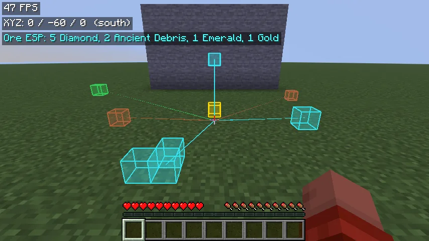
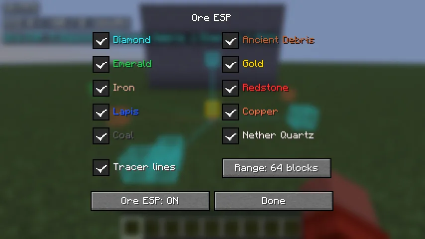

Donut Client is a small Fabric mod. Its Ore ESP outlines the ores you pick, straight through stone, and draws a line from your crosshair to the nearest veins. The world itself looks normal.

Each ore gets its own box colour. Diamond and Ancient Debris are on from the start; tick the rest in the picker.
Change any of them in Options → Controls → Key Binds → Donut Client Modules. FPS and coordinates show in the top-left corner.
.minecraft/mods folder.G.Ore ESP only knows about blocks the server has sent you, so servers with anti-xray hide or fake ores. Most multiplayer servers ban mods like this. Check the rules before you use it online.
